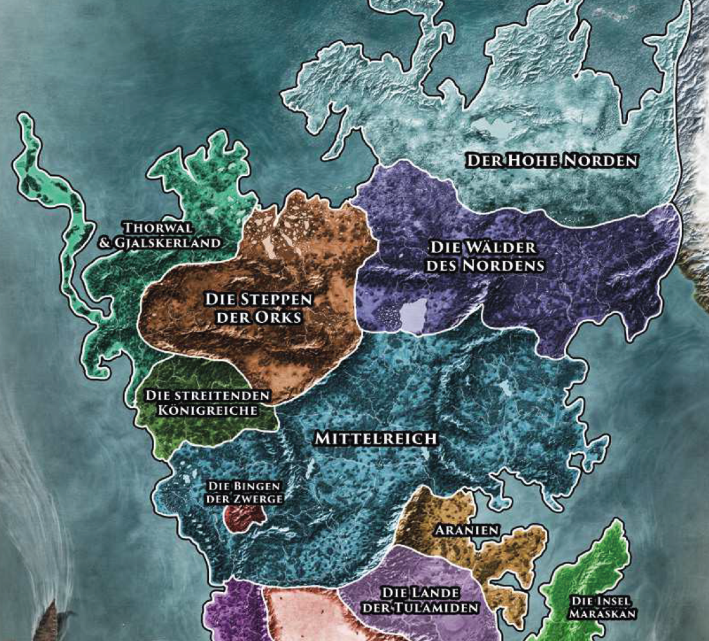

Der äußerste Norden der Welt, wo der fahl flackernde Nordstern, auch Ifirnslicht genannt, im Winter die einzige Lichtquelle darstellt, ist in der eisigen Umklammerung ewiger Kälte gefangen.
Allein schon die Namen der Regionen wie Klirrfrostwüste und Grimmfrostöde weisen auf die Schrecken hin, die hier lauern. Es kursieren Legenden, dass der Winter- und Jagdgott Firun hier uralte Übel gefangen gesetzt hätte. Firnklippen, Nebelzinnen oder Eiszinnen werden die weiß bedeckten Gebirge genannt, die sich aus den firnverkrusteten Ebenen erheben. Yeti-Land heißt die nördlichste aventurische Insel, Heimstatt der wilden Schneeschrate. Kaum eines der Wesen, die das ewige Eis als Heimstatt auserkoren haben, ist dem Menschen wohlgesinnt. Eisdrachen wie der uralte Schirr`Zach beherrschen die Himmel über dem ewigen Eis, die Erzählungen des Nordens berichten von der Wilden Hatz des Erzdämonen Nagrach, der wahllos jagt und mordet. Die rauen Stämme der Fjarninger Eisbarbaren leben hier ebenso wie die geheimnisvollen Firnelfen, die den Kontakt zu allen anderen Zweibeinern weithin meiden.
An der Breichbucht liegen außer der Stadt Paavi, von der aus das gleichnamige Herzogtum regiert wird, kaum mehr als einige verstreute Siedlungen, die mehr schlecht als recht von Bernsteinsammlern, Waldfängern und tollkühnen Pelztierjägern bevölkert werden. Noch vor kurzem knechtete die grausame Eishexe Glorana das Land an der Breichsbucht. Niemand weiß genau, was aus ihr geworden ist, doch ihr schwarzes Eis soll noch bis heute die Seelen jener verderben, die sich allzu leichtsinnig aus dem Schutz der Siedlungen wagen.
Zwischen den nördlichen Gebirgen und Küsten und den unheimlichen Wäldern der Salamandersteine erstreckt sich eine flache Ebene. Diese endlose Weite der Steppe, Brydia genannt, wird fast ausschließlich von Nomaden bewohnt, den ruhigen und genügsamen Nivesen, die mit ihren halbwilden Karen-Herden dem Lauf der Jahreszeiten folgend umherziehen.
Im äußersten Nordosten begrenzt das mächtigste aller Gebirge Aventurien: das Eherne Schwert. Es heißt, dass bisher alle Versuche einer Überqquerung an den mehr als 10.000 Schritt hohen Gipfeln scheiterten und so kennt man das Land jenseits des Ehernen Schwertes, das Riesland, allenfalls aus Mythen. Vielleicht könnte der Alte Drache Fuldigor darüber berichten, der so riesig sein soll, dass auf seinerm Rücken tausendjährige Eichen wachsen. Es heißt, dass er seit dem Drachenkrieg a, Rande der Welt über die Dämonenzitadelle im Ehernen Schwert wacht, aus der nur Böses in die Welt kommt.